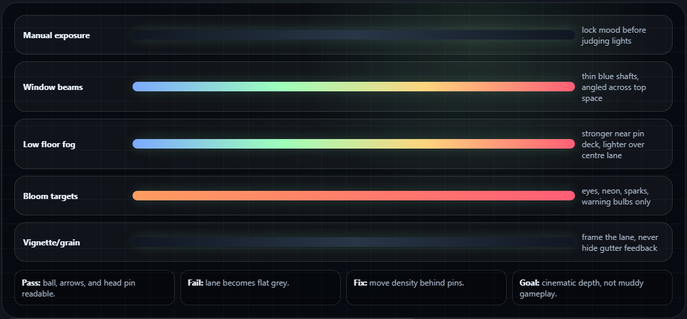

06
Fog and post process: cinematic, not muddy
Atmosphere sells the abandoned horror feeling, but too much fog kills readability. Use fog as depth and beams, not as a grey blanket over the whole lane.
Exponential Height FogPost Process Volume
Fog starting values
- Add Exponential Height Fog.
- Enable Volumetric Fog.
- Fog Density:
0.015-0.04. - Height Falloff:
0.2-0.5. - Keep low fog around the pin deck.
Post Process starting values
- Add a Post Process Volume.
- Enable Infinite Extent.
- Use controlled/manual exposure.
- Vignette:
0.25-0.45. - Subtle Bloom and Film Grain.
Where fog settings live
- Open Place Actors > Visual Effects.
- Drag Exponential Height Fog into the level.
- Select it and use Details to enable Volumetric Fog.
- Tune Fog Density and Height Falloff in Details while viewing the lane from the gameplay camera.
Where post process settings live
- Open Place Actors > Visual Effects.
- Drag Post Process Volume into the level.
- Select it and enable Infinite Extent in Details so it affects the whole scene.
- Set Exposure, Bloom, Vignette, and Film Grain in Details before judging final mood.
Beginner trap: auto exposure can brighten the whole scene and destroy the horror mood. Tame exposure early so your lighting decisions actually stay visible.
Style target: shadows lean blue/green, lane wood stays dirty amber, back-machine danger uses red sparingly, and highlights feel like old fluorescent tubes.
Fog and post-process stackDepth without muddy gameplay
Treat atmosphere as layered visibility control. The highest contrast stays on the playable lane and pin rack; heavier fog belongs at the back machine, floor edges, and distant wall openings.

Exposure: set Manual or carefully clamped Auto Exposure before judging any light value.
Volumetric fog: start subtle, then thicken only behind the pins and near floor/wall intersections.
Bloom: reserve strong bloom for neon, eye glow, ball energy, and back-machine warning bulbs.
Vignette/grain: use enough to frame the lane, but not enough to hide gutter or pin feedback.
Fog placement ruleSimple pass/fail test
- Pass: ball, arrows, foul line, gutters, and head pin are readable in a gameplay screenshot.
- Fail: fog makes the lane flat grey or hides where the ball crossed into the gutter.
- Fix: reduce density over the lane, keep fog denser behind the pins, and increase edge light contrast.